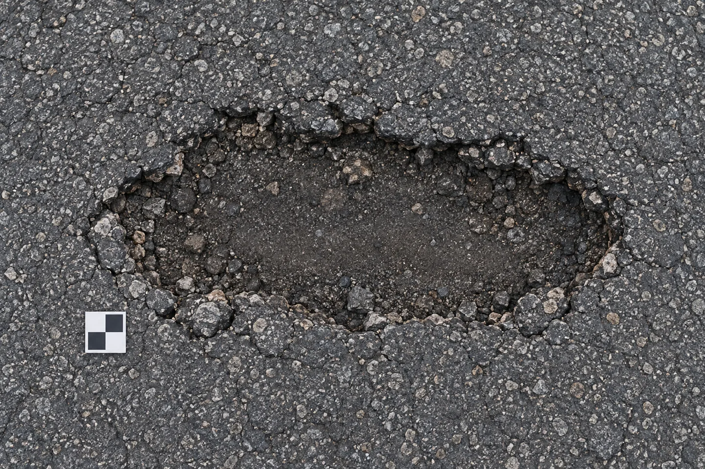
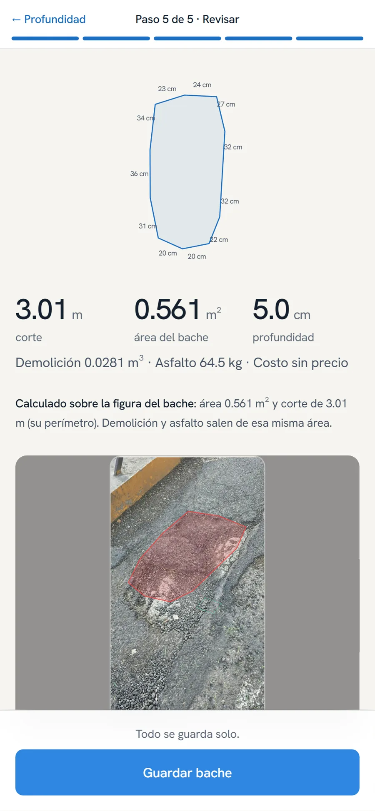
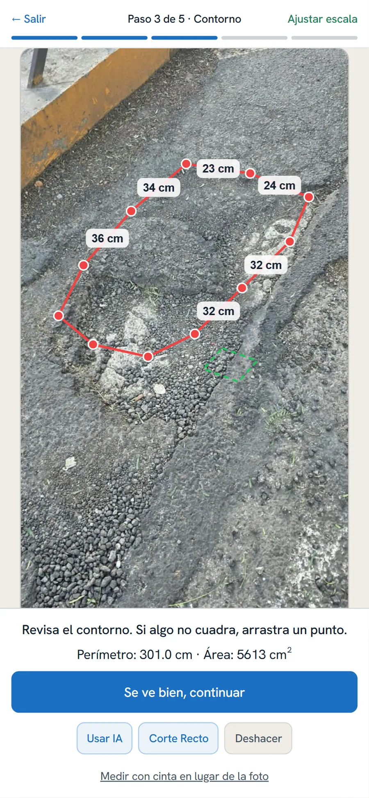

Un bache.
Una foto.
Un plano para trabajar.
Surface Ops lleva la medición de la calle a la oficina. Usa un marcador impreso o una cinta como escala; la IA propone el contorno y tú lo revisas.
En pruebas · sin pilotos ni clientes
La escala sí importa. Sin una referencia de tamaño conocido, una foto no basta para obtener medidas reales.

La foto cambia.
El trabajo toma forma.
Una foto con escala.
Coloca un marcador impreso junto al bache o usa una medida tomada con cinta. La referencia permite pasar de píxeles a medidas.
La IA propone; tú revisas.
Selecciona el bache y ajusta los puntos si hace falta. El contorno automático todavía puede equivocarse.
Contorno, corte, área y volumen.
Del contorno al corte rectangular. El volumen depende de la profundidad que se use.
- Corte rectangular de ejemplo
- 1.20 × 0.55 m
La profundidad con IA es experimental y no se ha comparado con una medición real en campo.
Un plano, lado por lado.
La ficha muestra el dibujo con la medida de cada lado. La oficina puede exportarlo a AutoCAD.
Revisa el contorno.
La propuesta automática puede fallar. Ajusta los puntos antes de continuar.
Comprueba la profundidad.
La estimación con IA sigue siendo experimental; falta compararla en campo.
Llévalo al plano.
Recibe el contorno, el corte rectangular, el área, el volumen y las cotas de cada lado.
La oficina recibe
algo con qué trabajar.
Un panel con mapa, filtros y la ficha de cada bache. Foto, ubicación, medidas y etapas del trabajo en un mismo lugar.
El volumen y los materiales calculados dependen de la profundidad registrada. La estimación con IA no es una medición validada en campo.

La calle no espera
a que vuelva la señal.

Captura y mide.
Registra el bache sin señal. Para usar la IA sin conexión, descarga antes los modelos en el teléfono.
Se queda en el teléfono.
La información se guarda localmente mientras no hay conexión.
Vuelve la señal; sube solo.
Al recuperar la conexión, los registros se sincronizan para que los reciba la oficina.
Para quienes trabajan
sobre la calle.
Municipios
Revisar ubicaciones y organizar los registros que llegan del campo.
Constructoras
Llevar las medidas y los planos al trabajo de bacheo.
Supervisión de obra
Consultar fotos, medidas y etapas registradas por el equipo.
Son usos propuestos. Surface Ops está en pruebas, sin pilotos ni clientes.
Agenda una prueba.
Platícanos cómo mide hoy tu equipo. Revisemos juntos qué funciona, qué falta comprobar y si Surface Ops encaja con tu trabajo.
En pruebas. No ofrecemos precisión de campo validada ni resultados de clientes.